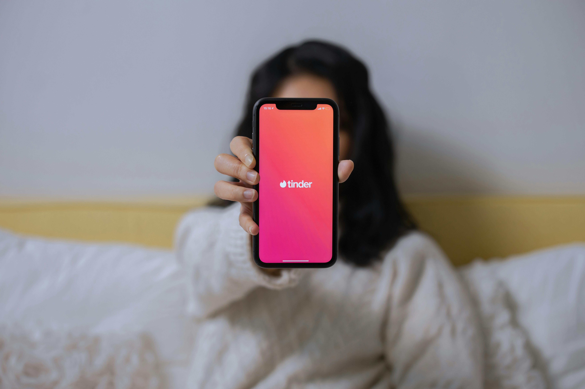

The dating landscape has fundamentally changed over the last 20 years. Over 380 million people use online dating apps like Tinder, Hinge, and Bumble to meet a long term partner or spouse, date casually, have casual sex, and make new friends.
According to Jaime Bronstein, a relationship therapist and coach, fewer people go to places like bars to meet people because of the convenience of dating apps.
However, a Pew Research Center survey conducted in 2019 showed 75% of daters found it very/somewhat difficult to find people to date in the previous year. In the five years since, countless dating app users have experienced "dating app fatigue" according to Bronstein.
 People aren't going to the bars because of the apps and people are complaining about the apps,
Bronstein said. It's just this big cycle. People are really craving a more curated way to meet people.
From 2002 to 2004, Columbia Business School professors Ray Fisman and Sheen Iyengar collected date from Columbia University graduate students who attended a speed dating event. Each attendee was given four minutes on a date with the opposite sex and then asked to rate their partner on attributes such as attractiveness and intelligence along with complete a questionnaire entailing items such as dating frequency, primary goal of attending speed dating, age, gender and race.
Each attendee ranked their date's attractiveness on a scale from one to 10 after going on a data. According to Psychology Today, physical attractiveness is the first element driving individuals toward a partner and is a viable reason for continuing to puruse a partner.
Attraction is speed dating No.1,
Bronstein said.
Those who found their data unattractive (zero to three) had a less than 3% chance of finding a match. Only nine attendees found a match with a partner they saw as unattractive. If the attendee found their partner slightly attractive (three to six), their chances of finding a match skyrocketed by over 150%.
According to the National Library of Medicine, physical attractiveness offers a halo effect. A halo effect is when a person's overall judgement is based on a single trait, often leading to biased judgements.
For example, individuals assume a correlation between positive qualities like kidness, personality, happiness, and physical attractiveness. Individuals also consciously or unconsciously employ a cognitive bias called What is beautiful is good
to associate beauty with positive qualities.
Over 85% of individuals who found a match described their partner as attractive (six to nine) or very attractive (nine to 10). One attendee ranked their partner's attractiveness on a scale of one to 10 with a 10. and matched with their partner.
Based on the four minute conversation with their date, each individual was also asked to rank their date's intelligence on a scale of one to 10. Similar to attractiveness, intelligence and the chance of match have a positive correlation.
If you want to estimate someone's intelligence without giving an IQ test, you would do just as well to base your estimate on their physical attractiveness as you would to base it on their years of education,
American Psychologist and writer Satoshi Kanazawa said in Psychology Today.
In relationships, intelligence and love go hand-in-hand, according to Mark Travers. Travers, a contributor for Forbes and an American psychologist, believes an intelligent partner can improve the quality of a relationship because they are skille communicators, complement their partner's intelligence, and are always open to listening.
Attendees who ranked their partner as unintelligent (zero to three) had zero matches. Less than 1% of participants were marked unintelligent by their date. Of the 859 participants who found their partner slightly intlligent (three to six), 43 found a match.
Those who found their partner to be intelligent (six to nine) were 3.27 more likely to find a match than participants who found their partner to be slightly intelligent. If the attendees found their partner very intelligent (nine to ten), there would be a match 25% of the time, the highest percentage based on partner attractiveness.
When you go on a first date, like a real date, you know right away,
Bronstein said. You don't know every detail about your future with this person, but everybody has that initial excitment. It's looking, talking and seeing each other.
In her sessions, Bronstein implores her clients to show up to dates as their authentic selves and have a positive mindset. Those with the wrong intentions or mindset regarding dating often fall short of their goal.
If you're so focused and in desperation mode, life will give you more reasons to feel desperate,
Bronstein said. If you are relaxed and have no attachement to the outcome and are in more of a neutral mode, then there is room to bring that person in for you.
Before starting the event, every attendee was asked to write down their primary goal and reason for attending the speed dating event. Their answers were broken down into five major categories: looking for a serious relationship, it seemed like a fun night out, getting a date, meeting new people, and saying I did it.
Those who set their intentions to find a serious relationship were the least likely to find a match. 932 participants went to speed dating looking for a serious relationship or to get a data. Of those 932 individuals, 151 found matches. According to Bronstein, individuals' efforts toward finding their person will be good as long as they take action.
There's a fine line (between looking for love and letting it find them),
Bronstein said. You don't want to literally be like I have an intention to find my person.
Stephanie Cacioppo, one of the world's leading authorities on the neuroscience of social connections, believes that spotaneous events outside one of one's comfort zone, like speed dating, can unpredictably inhibit love.
In a study by Yale Psychologist Robb B. Rutledge and his colleagues, participants set expectations before playing a game with a monetary award. Rutledge and his colleagues noticed that their level of happiness was not due to the amount of money won. Rather, it was due to the difference between their initial expectations and the outcome.
If they had no expectation of winning and ended up with even a tiny amount of money, they were happy,
Cacioppo said in her article on Mindful.
All seven categories, including unknown and other, had less than a 20% chance of finding a match.
Over 1,000 participants said their intentions in attending the Columbia speed dating ebent were to have a fun night out, meet new people, or say they did it. Among the 1,380 participants who found matches during the Columbia speed dating event, over 80% held one of those mindsets before attending.
It's good to be open-minded and try different things because you don't know how you're going to meet your person,
Bronstein said.